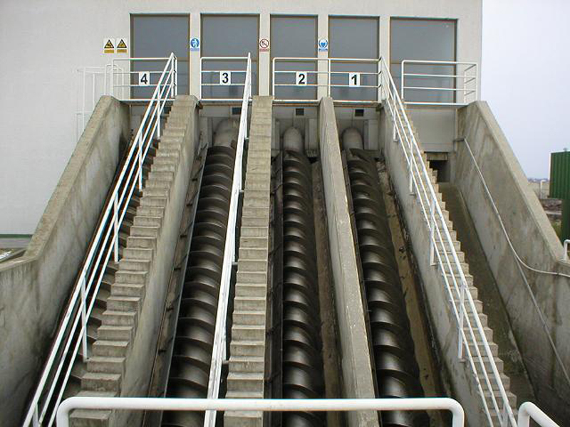

Održavanje pročistača otpadnih voda
Pouzdano održavanje za siguran rad sustava
Pročistači otpadnih voda imaju važnu ulogu u zaštiti okoliša i pravilnom zbrinjavanju otpadnih voda.
Redovitim održavanjem osigurava se njihov učinkovit rad, smanjuje mogućnost kvarova te produžuje vijek trajanja opreme..
Naše usluge
Nudimo stručne usluge pregleda, čišćenja i servisiranja pročistača otpadnih voda za privatne korisnike, tvrtke i industrijska postrojenja. Naš tim prati stanje sustava, uklanja eventualne nepravilnosti te provodi potrebne popravke kako bi uređaji radili bez prekida.
- Redoviti tehnički pregledi
- Čišćenje spremnika i filtera
- Servis pumpi i mehaničkih dijelova
- Kontrola kvalitete rada sustava
- Zamjena dotrajalih komponenti
Zašto je održavanje važno?
Neodržavani pročistači mogu uzrokovati smanjenu učinkovitost, neugodne mirise i veće troškove popravaka. Pravovremenim servisiranjem sprječavaju se ozbiljniji kvarovi te se osigurava usklađenost s ekološkim standardima.
